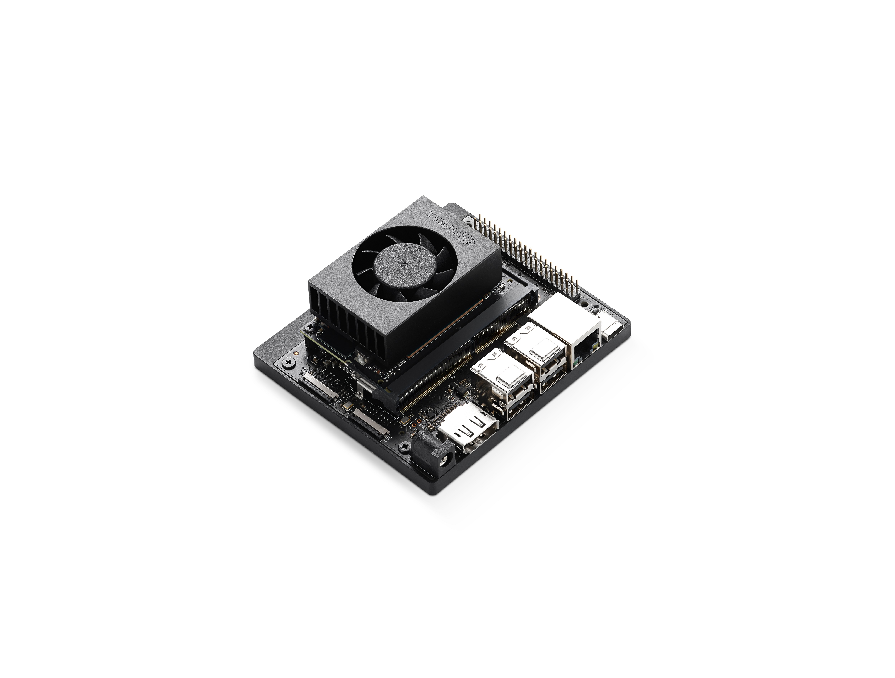
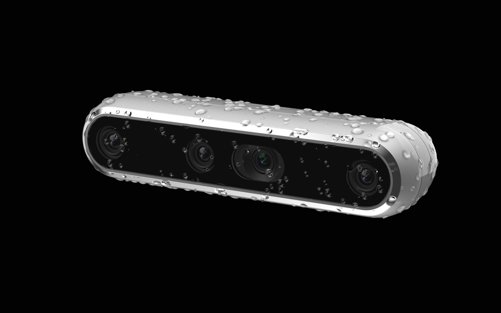

Exploring Vision with NVIDIA Jetson Orin Nano & Intel RealSense D457
I recently worked on a project where I combined the NVIDIA Jetson Orin Nano and the Intel Corporation RealSense D457 depth camera to develop a machine vision application. This setup allowed me to perform basic object detection, motion tracking, and utilize point cloud data, unlocking huge possibilities for real-world applications!
This project emphasizes the importance of depth perception and real-time analysis in machine vision. With the Jetson Orin Nano’s incredible processing power and the depth camera’s spatial data, I explored how these technologies can bridge the gap between perception and action.
Hardware:
Intel RealSense D457 Depth Camera
- Resolution: Up to 1280x720 pixels.
- Frame Rate: Up to 90 frames per second.
- Depth Range: 0.2 to 20 meters.
- Field of View: Wide field of view for enhanced depth perception.
- Connectivity: USB 3.1 Gen 1 for fast data transfer.
NVIDIA Jetson Orin Nano (8GB)
- GPU: 1024-core NVIDIA Ampere architecture GPU.
- CPU: 6-core ARM Cortex-A78AE.
- Memory: 8GB LPDDR5.
- Performance: Up to 40 TOPS (Tera Operations Per Second).
- Connectivity: Gigabit Ethernet, multiple USB ports, and camera interfaces.
Software:
- NVIDIA SDK: Tools for accelerated AI computations and seamless deployment.
- RealSense SDK: Software for processing depth data and integrating point clouds.
- Ubuntu: Operating system used for development and deployment.
Implemented Projects
- Object detection using a trained model
- Motion detection
- Point cloud viewing
- Depth image acquisition


Project Output